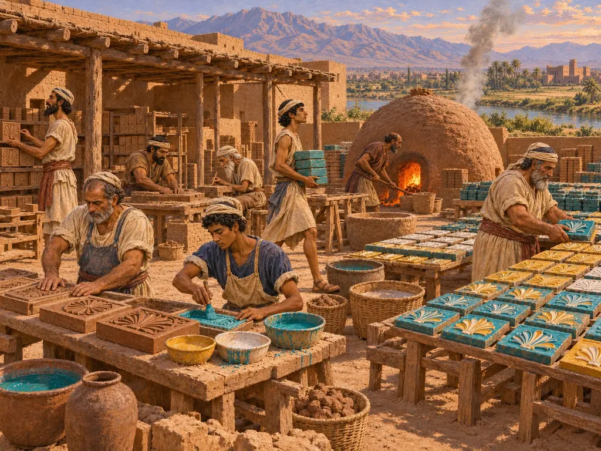
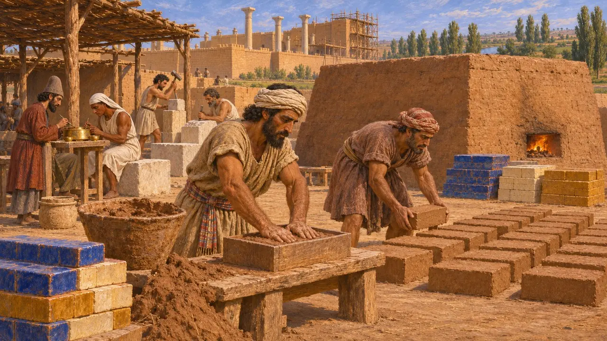
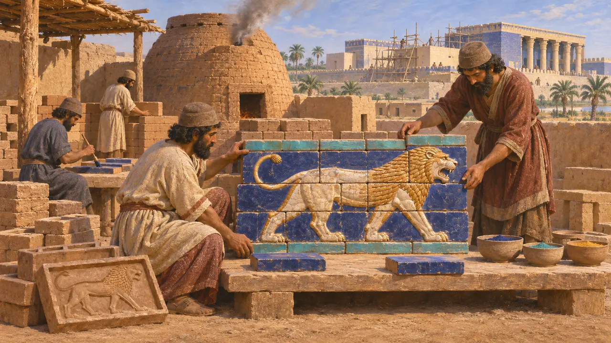
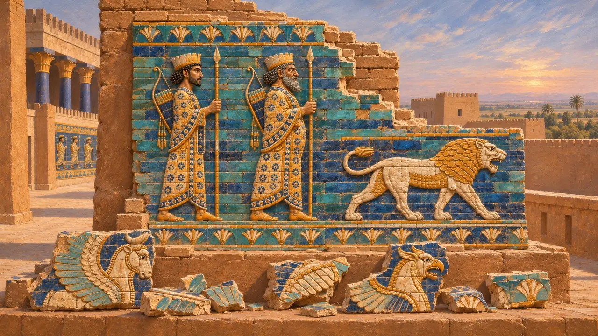
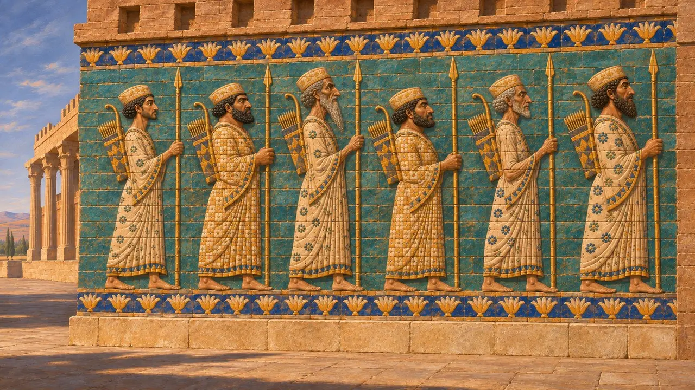

Horno de ladrillo vidriado
Talleres de revestimientos de ladrillo coloreado para el palacio de Darío en Susa, hacia 520-500 a. e. c.
En el juego: Nivel 5: La Carta
Los muros del palacio de Darío en Susa estaban revestidos de ladrillos moldeados y vidriados en colores vivos, que representaban guardias, leones, toros y criaturas aladas. La propia carta de fundación de Darío dice que los babilonios moldearon el ladrillo cocido. El oficio tenía hondas raíces en Mesopotamia, donde el ladrillo vidriado en relieve había decorado las puertas de Babilonia unas dos generaciones antes. En Susa se convirtió en una de las señales más claras de un imperio que se servía de las destrezas de muchos pueblos.
En el juego: El horno convierte la arcilla del barrero en ladrillos vidriados para el palacio, hechos por babilonios, como dice DSf de los moldeadores de ladrillos. En realidad, muchos ladrillos de Susa tenían una pasta silícea y arenosa en lugar de simple arcilla, y usaban más colores que el azul, el amarillo y el blanco.

Lo que dice la carta de Darío
En los documentosEn su carta fundacional de Susa, Darío enumera los materiales de su palacio y los pueblos que los trabajaron. Afirma que quienes moldearon el ladrillo cocido fueron babilonios, mientras que los canteros eran jonios y sardianos, y los orfebres, medos y egipcios. El texto se conserva en versiones en persa antiguo, elamita y acadio, y otra carta elamita, DSz, ofrece un relato similar.
DSf; DSz

Un oficio mesopotámico y elamita
En los documentosEl ladrillo vidriado y moldeado en relieve tenía una larga historia en Mesopotamia. Su ejemplo más conocido es la Puerta de Ishtar y la Vía Procesional de Babilonia, construidas bajo Nabucodonosor II en la primera mitad del siglo VI, con leones, toros y dragones en esmalte de colores. Los excavadores alemanes dirigidos por Robert Koldewey sacaron a la luz estos restos entre 1899 y 1917. La propia Susa contaba además con una tradición elamita más antigua de ladrillo vidriado, de la que los constructores de Darío podían servirse junto a la babilónica.
R. Koldewey, The Excavations at Babylon, 1914

Lo que hallaron las excavaciones de Susa
En los documentosLas excavaciones francesas, iniciadas por Marcel y Jane Dieulafoy en la década de 1880, recuperaron miles de fragmentos de ladrillo vidriado del palacio. Muestran hileras de guardias con lanzas y arcos, leones en marcha, toros alados, grifos y esfinges, muchos de ellos hoy recompuestos en el Louvre. Los análisis indican que muchos ladrillos tenían una pasta arenosa, rica en cuarzo, y que unas líneas en relieve mantenían separados los colores durante la cocción. En las excavaciones publicadas no se ha identificado con seguridad ningún horno destinado a ellos.
P. O. Harper, J. Aruz and F. Tallon (eds), The Royal City of Susa, 1992

Quiénes eran los arqueros de ladrillo
En disputaLos paneles más conocidos muestran largas filas de hombres con túnicas que sostienen lanzas y llevan arcos y carcajes a la espalda. Algunos historiadores los identifican con la guardia real que Heródoto llama los Inmortales. Otros ven en ellos a nobles persas o un símbolo del pueblo persa como ejército del Rey. Además, las reconstrucciones modernas combinan ladrillos hallados en lugares distintos, por lo que la disposición original de los frisos es en parte incierta.
Herodotus 7.83; J. Perrot (ed.), The Palace of Darius at Susa, 2013
Fuentes
- DSf
- DSz
- P. O. Harper, J. Aruz and F. Tallon (eds), The Royal City of Susa, 1992
- J. Perrot (ed.), The Palace of Darius at Susa, 2013
- R. Koldewey, The Excavations at Babylon, 1914
- P. Briant, From Cyrus to Alexander, 2002